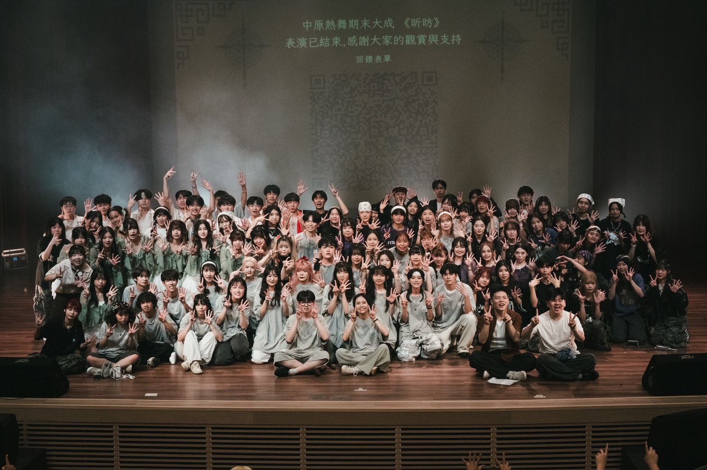

中原熱舞社 - 執行秘書 / Hip-Hop 組教學
擔任幹部任期：一年

身為執秘，我負責統籌各項會議，培養了文書整理能力。在擔任教學時，我必須將舞步「拆解」成易懂的口訣，這與「轉譯技術語言」的能力不謀而合。
「你若心存一切渴望，就沒有人能夠阻擋你。」
我是潘彥辰。我認為資管人最大的價值，是在於能成為「技術端」與「商業端」溝通的橋樑。我不僅追求程式碼的嚴謹，更在乎系統是否真的符合使用者邏輯。
擔任幹部任期：一年

身為執秘，我負責統籌各項會議，培養了文書整理能力。在擔任教學時，我必須將舞步「拆解」成易懂的口訣，這與「轉譯技術語言」的能力不謀而合。